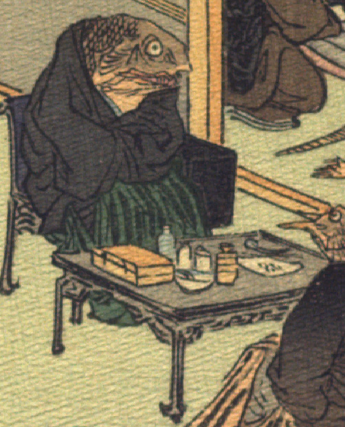

魚の化物。頭部は墨色で、黒い羽織と緑色の袴をまとい、腕を組んで、背の付いた椅子に座っている。手前の机の上には箱、瓶、皿、匙らしきものが置かれている。これらは医者の道具のように見える。
著作者：J.Dautremer／出典：親書誌：U426_nichibunken_0107：La meduse simple et naïve／日付：2006／資源識別子：U426_nichibunken_0107_0003_0003
Copyright (c)2010- International Research Center for Japanese Studies, Kyoto, Japan. All rights reserved.